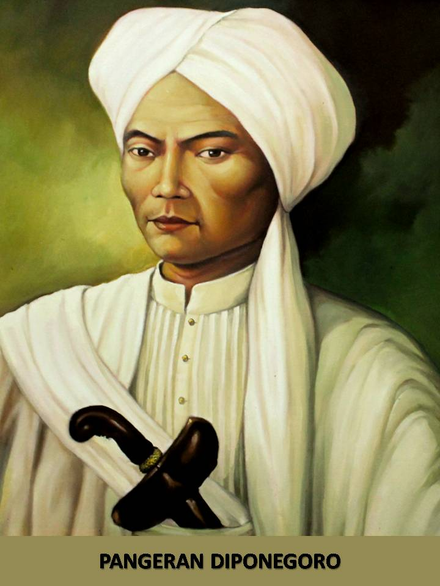

ahmad yani
Pahlawan
Ahmad Yani lahir di Jenar, Purworejo, Jawa Tengah pada tanggal 19 Juni 1922.

dewi sartika
Pahlawan
Dewi Sartika lahir di Cicalengka pada 4 Desember 1884.

pangeran diponegoro
Pahlawan
Pangeran Diponegoro lahir 11 November 1785 di Yogyakarta.